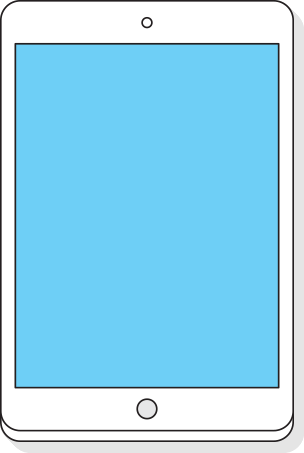
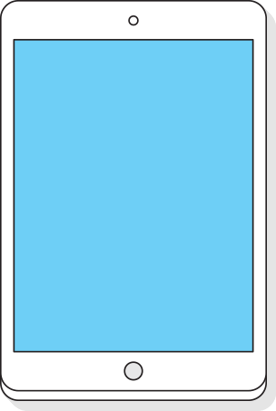

Интернет сегодня — это не только информация и технологии, это люди: их желания, предпочтения, задачи. Люди — вот атомы, из которых на самом деле состоит цифроваяматерия; и эти люди очень, очень разные. Сегодня поиск умеет подстраиваться, помогая людям быстрее приходить к тем решениям, которые им нужны.
Мы представляем Атом: совокупность инструментов, призванных научить интернет подстраиваться под разных людей, которые им нужны.


 
